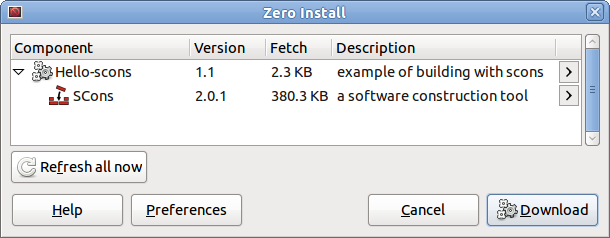

Name: Hello-scons
Maintainer: Thomas Leonard
License: Public domain
Source: Git repository
Zero Install feed: http://0install.net/tests/Hello-scons.xml
Hello-scons is a simple "Hello world" program written in C. It is built using the SCons build tool.
Its purpose is to demonstrate the use of 0compile to fetch build dependencies; you do not need to install SCons manually on your system in order to build it.
This example assumes that you have already read the main 0compile tutorial.
You can try it out by using the setup command as usual:
$ 0compile setup http://0install.net/tests/Hello-scons.xml Hello-scons
0compile will create a Hello-scons directory for the build. You will be prompted to choose the versions of Hello-scons and SCons:

To build, change into the new directory and use the build command:
$ cd Hello-scons
$ 0compile build
Executing: "$SCONS/scons.py" -f "$SRCDIR/SConstruct" --srcdir="$SRCDIR" "$DISTDIR"
This creates a hello-scons-ARCH directory ready for use and/or distribution, and a build directory with some temporary files, such as hello.o. This is used only to speed up later rebuilds.
To run:
$ 0launch hello-scons-linux-x86_64/0install/Hello-scons.xml
Hello world!
To see (or modify) a copy of the source:
$ 0compile copy-src
Copied as '/home/me/Hello-scons/src'
The main issues with using SCons with 0compile are that:
-
SCons defaults to saving build files in the source directory. 0compile requires that the source directory is not written to during the build (since the 0install cache is read-only). Therefore, you must use
--srcdir. -
By default, SCons resets all environment variables. This means that instead of compiling against the library versions you chose, it will build against whatever happens to be the default on the system today.
The src/SConstruct file shows how to fix these problems.
For more information (including how to publish the binary using Zero Install), see the main 0compile tutorial.
Building from a Git checkout
To build the latest Git version of hello-scons:
$ git clone git://zero-install.git.sourceforge.net/gitroot/zero-install/hello-scons
$ cd hello-scons
$ 0compile build
$ 0launch hello-scons-linux-x86_64/0install/Hello-scons.xml
Hello world!